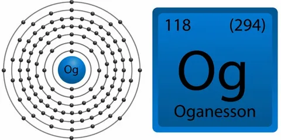
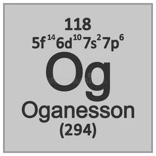
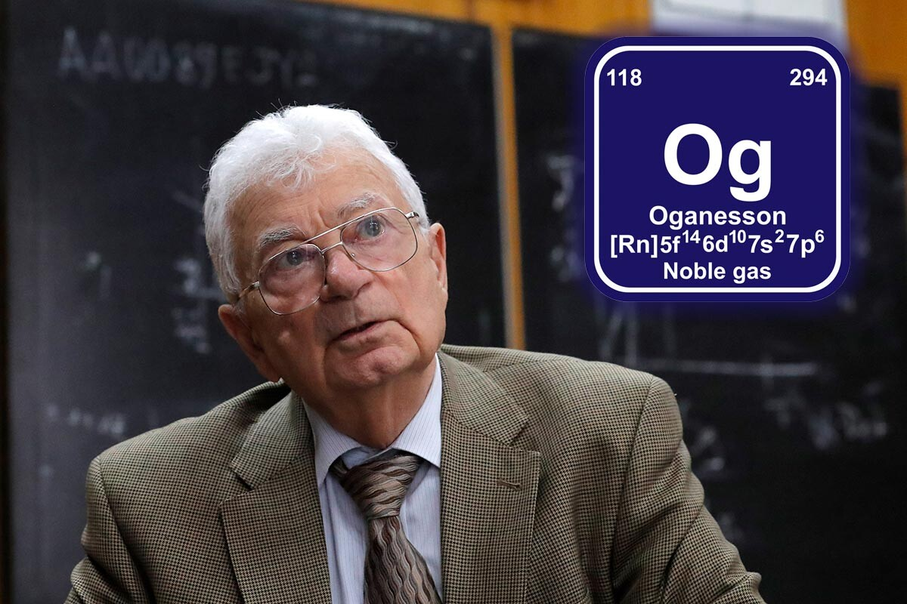

Оганессон(Og)

Оганессон - элемент под номером 118 в периодической таблице Менделеева. Это радиоактивный синтетический трансактинидный элемент, официально признанный в 2016 году. С 2005 года было произведено всего 4 атома оганессона

Искусственно синтезированный радиоактивный элемент, в природе не встречается. Синтез ядер оганесона был впервые осуществлён в 2002 и 2005 годах в Объединённом институте ядерных исследований Дубна в сотрудничестве с Ливерморской национальной лабораторией.

Название оганессон дана в честь физика-ядерщика Юрия Оганесяна, ключевого игрока в открытии новых тяжелых элементов периодической системы. Окончание названия элемента на -on соответствует положению элемента в периоде инертных газов.
Элемент 118 не имеет известной или ожидаемой биологической роли ни в одном организме. Ожидается, что он будет токсичным из-за своей радиоактивности.
Так как оганесон был получен лишь в качестве отдельных атомов, а период его полураспада не позволяет его накапливать, то все физические свойства являются расчётными. Сложность получения также не позволяет экспериментально изучать химические свойства (в данном случае период его полураспада не был бы ограничивающим значением для некоторых реакций) и они тоже являются исключительно расчётными.Также оганесон считается самым тяжёлым атомом.